| 日付 | 2022年8月13日（土） - 2022年8月15日（月） | ||
|---|---|---|---|
| 山域 | 北アルプス | ||
| メンバー | 家族（妻、長女・11歳、長男・9歳） | ||
| 山行形態 | 子連れ2泊3日キャンプ | ||
| アクセス | 車、ロープウェイ | ||
| ルート (Map) |
|
2日目
7時に鍋平園地の駐車場に車を停める。ロープウェイ運航は8:15～だと思っていたが、
今朝Webページを改めてみると臨時便が7:00～との情報をゲットし、大慌てで移動してきた。
昨日から情報をゲットできていれば7時に合わせられたのだが…
背後に見えるのは錫杖岳のあたりの稜線だろうか？素晴らしい景色だ。
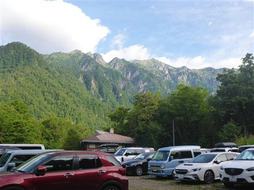
登山者用駐車場は観光客用より少し遠くにある。
ロープウェイ乗り場までは15分ほど車道と森の中を歩く。
3便目の7:45目指して歩く。
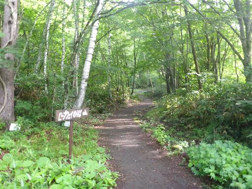
ロープウェイ乗り場に到着。

チケットを購入して無事乗車。2階建ての巨大ロープウェイで、1階に誘導される。
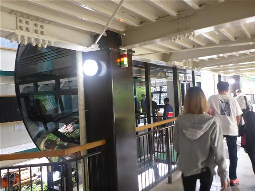
ロープウェイからの景色。これから歩く予定の稜線が見える。
一番高い場所が目指す西穂高岳だろうか？
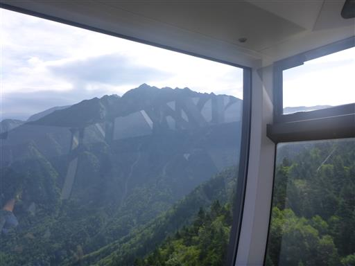
西穂高口駅に到着。標高2156m。
こじんまりとした駅だ。現在改装中で今年中にはきれいに整備されるのだろう。
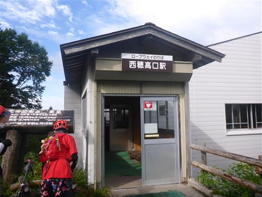
少し先に小さな小屋がある。
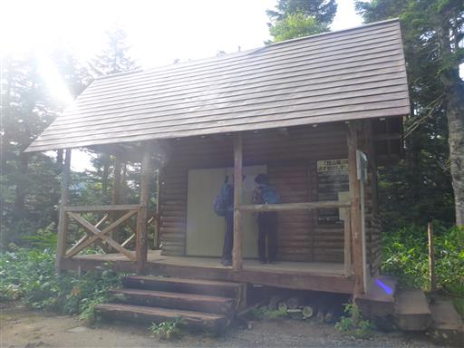
登山道に入るところで、一般のお客様は入らないよう、注意書きがある。
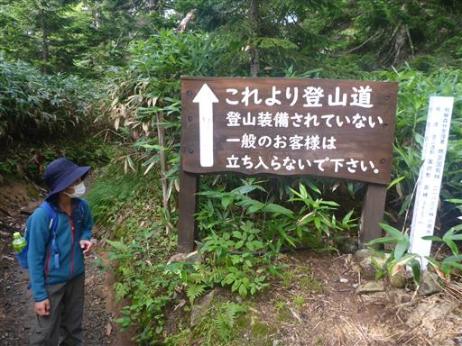
最初は樹林帯の中の道。そこそこアップダウンがある。
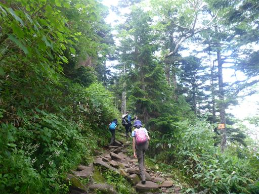
1時間で西穂山荘に到着。13年振りの訪問だ。
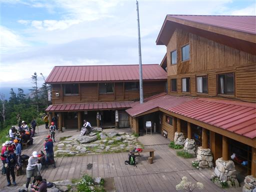
霞沢岳が見える。雲が多いがそこそこ展望が広がる。
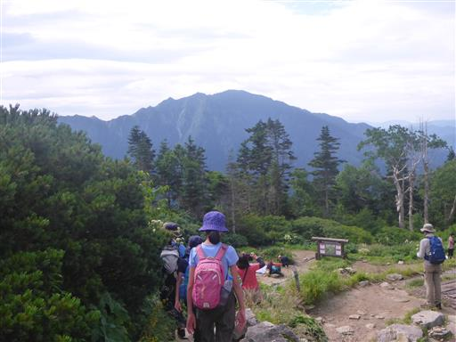
ここから本格的な登り。
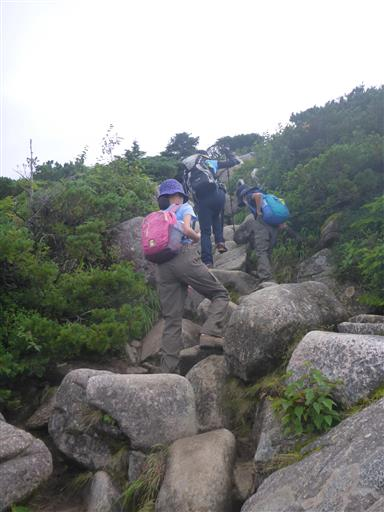
振り返ると西穂山荘の向こうに焼岳が見える。その向こうの乗鞍岳は雲の中だ。
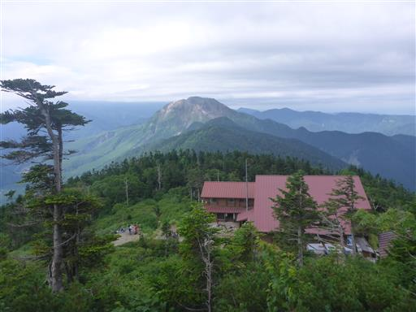
これから登る山々が見える。
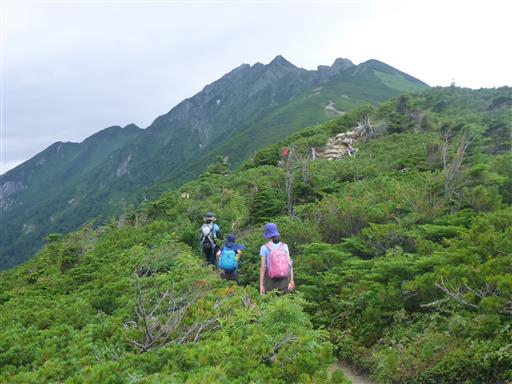
穂高岳に雲がかかり始めている。見えているのは前穂の辺りだ。
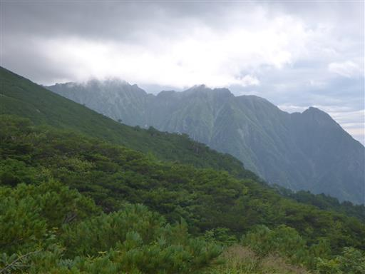
左手には笠ヶ岳。こちらにも山頂部に雲がかかり始めている。

緩やかな斜面が続く。娘は疲れただの暑いだの文句炸裂でうんざりする。
うるさすぎて、もはや周りの登山者に迷惑をかけているレベルだ。
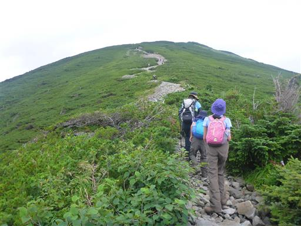
足元に咲くイワツメクサ。
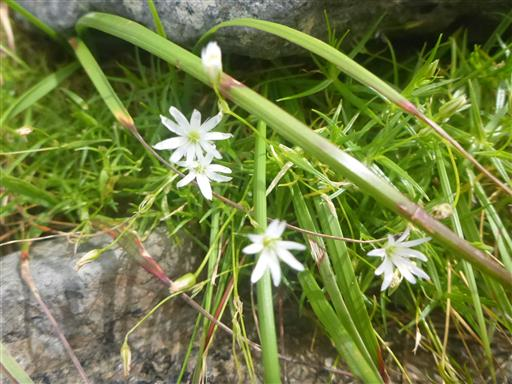
雲が湧いてきて、あっという間に視界を隠してしまう。
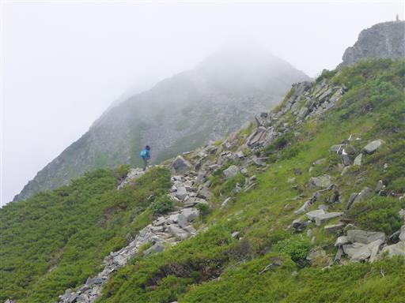
右側には梓川が見える。上高地はずいぶんとご無沙汰だ。
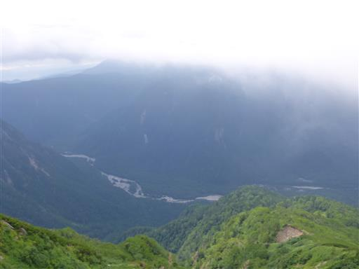
トウヤクリンドウ。
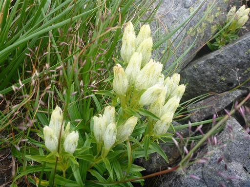
西穂独標が近くに見えてくる。もうほぼ雲の中だ。
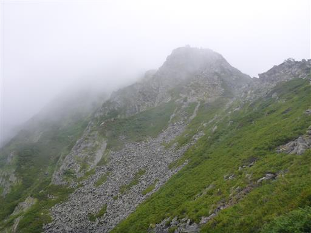
山頂直下から西穂独標を見上げる。
こうやって見上げると、どことなくジャンダルムに似ている。
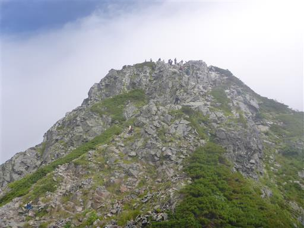
最後の登りは渋滞。
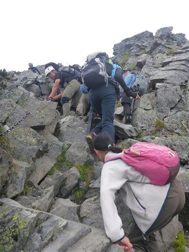
西穂高岳独標に到着。標高2701m。
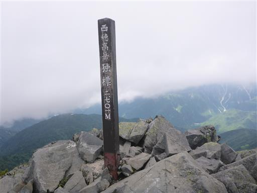
ここから西穂高岳に続く登山道。
ここに来るのは3度目だが、一度たりとも晴れたことが無い。無念で仕方がない。

天気は悪化傾向。この天気で西穂高に行ってもあまり意味が無いのと、
雨が降ってくる可能性があるため、ここで撤退を決断。引き返すことにする。
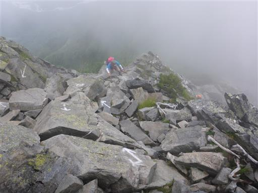
真白に覆われた登山道を下る。登りで少し視界があっただけまだましだ。
7時のロープウェイに乗れていたら、西穂高岳までたどり着けたかもしれない。
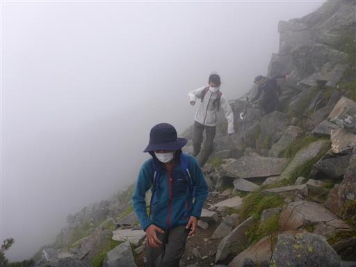
西穂山荘に戻ってくる。ここで昼食休憩をとる。
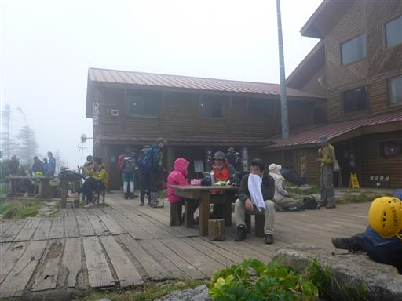
山荘周辺にはサラシナショウマなど多くの高山植物が咲いている。
昼食を取ったら山荘出発。
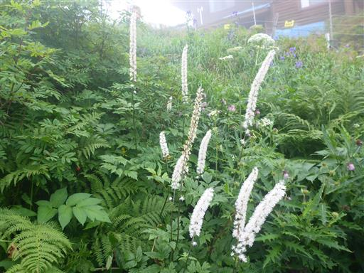
少し大き目のカエルを捕まえる。
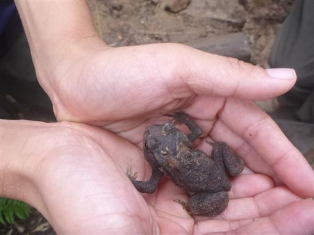
ロープウェイ西穂高口駅に戻ってくる。展望台に登ってみたが、ここももう真っ白だ。
それでも観光客が続々とやってくるのが驚きだ。
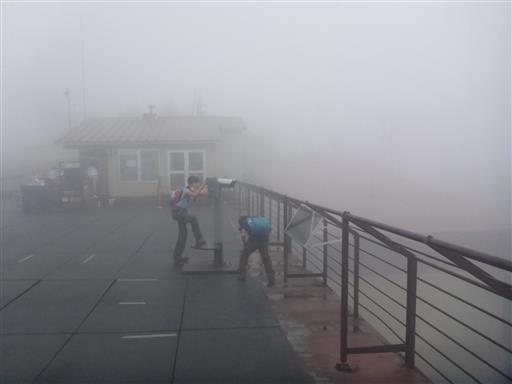
帰りのロープウェイは油断していたら列が長く伸びていて、一本逃してしまう。
15分遅れの臨時便に乗って下山する。待っている間に大雨が降ってきた。
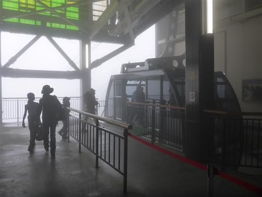
雲の中に消えるケーブル。視界はゼロだ。
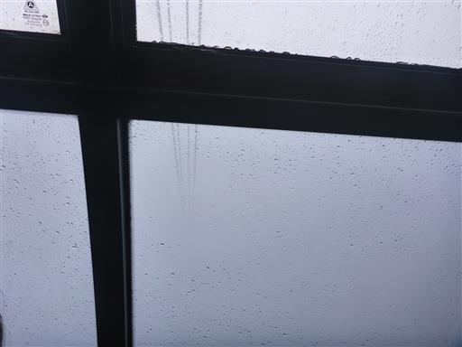
だいぶ下まで降りてようやく雲の下に出てくる。
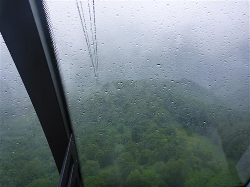
あとは小雨が降る中、車道を歩いて駐車場に向かう。
山で雨に降られなかったのは良かったが、またしても西穂の景色が眺められず無念の登山となった。
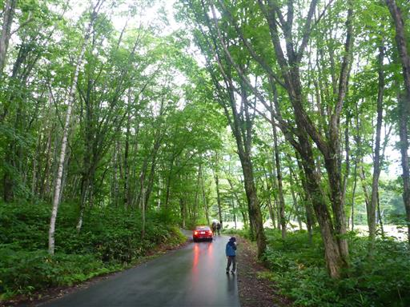
本日も温泉はひらゆの森へ。新穂高温泉の周辺で5つくらい電話してみたが、
内湯のある温泉は全て日帰り温泉は休止中とのことだった。
宿泊客が多く来ているのだろう。
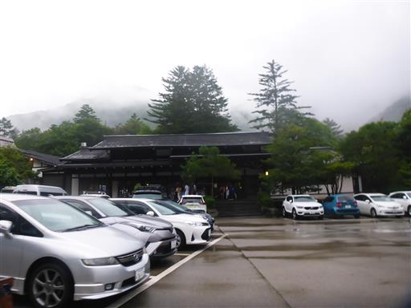
キャンプ場に戻っても、雨は激しく降り続いている。
設営の仕方が悪いのか、タープに水がたまるため、時々水を流す。
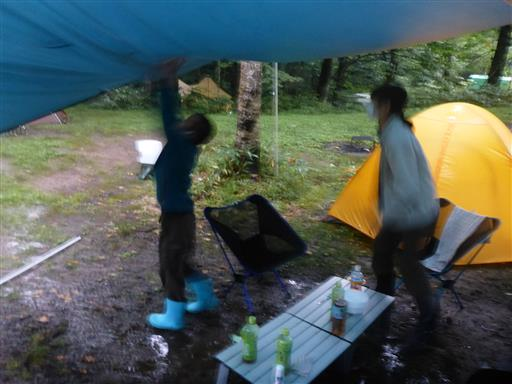
3日目
本日は撤収。火曜の天気が良さそうなので、2泊追加して西穂のリベンジも考えたが
結局この辺りの天気は回復しないだろうと考え撤収を決断。
朝から大雨が降っており、3日間雨が降り続いたキャンプ場だった。
小雨になったタイミングを見計らって撤収する。
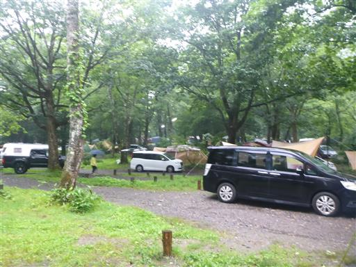
松本で松本城リベンジや昼食を取ろうと考えていたが、
Webで調べたら松本城は相変わらず70分待ちで、平日でも大混雑は変わらず、大人しく直帰。
諏訪湖SAで昼食を取って帰路につく。
天気予報が悪い中、何とかできないかと足掻いたが、
雨続きのキャンプ場に、目的を果たせなかった登山と、何もできない旅行になってしまった。
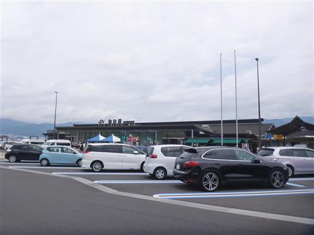